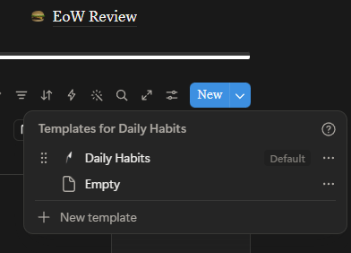
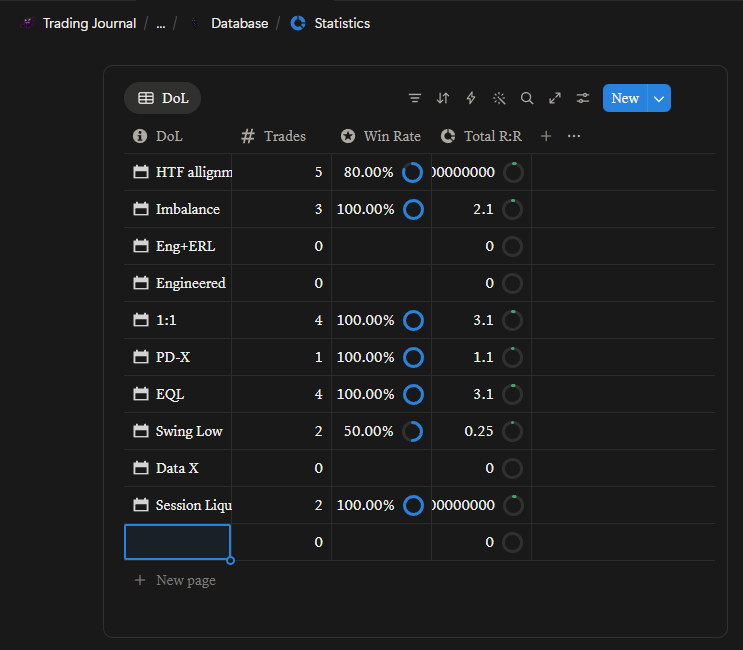

A quick walkthrough to get your Trading Journal Pro up and running in Notion — under 5 minutes, zero config.
← Back to storeAfter checkout on Lemon Squeezy you'll receive an email with a Notion duplication link. Check your inbox (and spam) — it should arrive instantly. Haven't received it? Email jayvinn.pacheco@gmail.com.
Click the duplication link. Notion opens a preview — hit Duplicate in the top-right. The full journal copies into your personal (or team) workspace as a private copy — no shared-editing conflicts.
Three main views: Trade Entry (add trades), Dashboard (hit-rate / R:R / biggest wins & losses), and Daily / Weekly / Monthly P&L roll-ups. All pull from the same underlying database — data stays in sync everywhere.
Scroll to the Quick Links section on the main page. By default my example links are shown for reference — you can delete them and add your own links to whatever trading tools, brokers, or news sources you use. Simply type (or paste) the URL and it will automatically become a clickable link.
On the main page, press the blue dropdown arrow on the "New" button, then press the three dots (⋯) on the "Daily Habits" template saved there and press Edit. When the template page opens, simply press Add a property and select Checkbox — you can now add whatever habits you want.
⚠️ Note: Adding properties changes the database structure and will break the completion % formula. If you still want completion % to work, DM me on Instagram and I'll provide a new formula code to fix it.

Go to the Statistics page. Under whichever category you want to add to, press the + New page button and simply type in whatever you want to add — you don't need to mess with anything else. The Statistics page is already set up to track whatever you put in automatically. Just type your confluence, ticker symbol, or entry model name and it will show up automatically under the journal entry section and track its statistics.

The Trade Entry database is ready for new rows — no template work needed. Each field maps cleanly: Ticker, Setup Type, Entry / Exit, Risk ($), Outcome ($ / R:R), Date, Notes. Just open the entry view and fill it in.
Use Notion's embed block or image upload inside each trade row for entry and exit charts. Being able to revisit your screenshot context later is one of the journal's biggest advantages — you'll spot patterns you missed while live.
Do I need a paid Notion plan?
No — the free Personal plan handles everything.
Can I share it with a trading partner?
Single-seat included. Team / reseller licenses — email me.
Does it work on mobile?
Yes — log trades from the Notion app. Mobile entries work fine for quick capture.
How do I stay updated?
Lifetime updates land on your duplication link. Re-duplicate to pull the latest version any time.